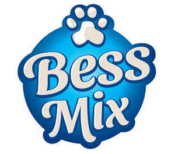

Trade Mark Journal No.2025/016 18 April 2025
UK00004183926 3 April 2025 (31)

- Class 31
- Grains and agricultural, horticultural and forestry products; Live animals; Fresh fruits and vegetables; Seeds; Natural plants and flowers; Foodstuffs for animals; Malt; Algae for human or animal consumption; Algarovilla for animal consumption; Almonds [fruits]; Aloe vera plants; Animal fattening preparations; Animal foodstuffs; Aromatic sand for pets [litter]; Bagasses of cane [raw material]; Barley; Beans, fresh; Beet; Berries, fresh fruits; Beverages for pets; Bird food; Bran; Bran mash for animal consumption; Bred stock; Bulbs; Bushes; Cereal seeds, unprocessed; Chestnuts, fresh; Chicory roots; Chicory [salad]; Christmas trees; Citrus fruit; Cocoa beans, raw; Coconut shell; Coconuts; Cola nuts; Copra; Crayfish, live; Crustaceans, live; Cucumbers, fresh; Cuttle bone for birds; Distillery waste for animal consumption; Dog biscuits; Draff; Edible chews for animals; Eggs for hatching, fertilised; Fish, live; Fish meal for animal consumption; Fish spawn; Fishing bait, live; Flax meal [fodder]; Flowers, dried, for decoration; Flowers, natural; Fodder; Fruit, fresh; Garden herbs, fresh; Grains [cereals]; Grains for animal consumption; Grapes, fresh; Groats for poultry; Hay; Hazelnuts; Hop cones; Hops; Juniper berries; Leeks, fresh; Lemons, fresh; Lentils, fresh; Lettuce, fresh; Lime for animal forage; Linseed for animal consumption; Linseed meal for animal consumption; Litter peat; Live animals; Lobsters, live; Locust beans; Maize; Maize cake for cattle; Malt for brewing and distilling; Marc; Marrows; Mash for fattening livestock; Meal for animals; Menagerie animals; Mushroom spawn for propagation; Mushrooms, fresh; Mussels, live; Nettles; Nuts [fruits]; Oats; Oil cake; Olives, fresh; Onions, fresh vegetables; Oranges; Oysters, live; Palm trees; Palms [leaves of the palm tree]; Peanut cake for animals; Peanut meal for animals; Peanuts, fresh; Peas, fresh; Peppers [plants]; Pet food; Pine cones; Plant seeds; Plants; Plants, dried, for decoration; Pollen [raw material]; Potatoes, fresh; Poultry, live; Preparations for egg laying poultry; Products for animal litter; Rape cake for cattle; Raw barks; Residual products of cereals for animal consumption; Residue in a still after distillation; Rhubarb; Rice meal for forage; Rice, unprocessed; Roots for food; Rose bushes; Rough cork; Rye; Salt for cattle; Sanded paper for pets [litter]; Sea-cucumbers, live; Seed germ for botanical purposes; Seedlings; Sesame; Shellfish, live; Silkworm eggs; Silkworms; Sod; Spinach, fresh; Spiny lobsters, live; Stall food for animals; Straw [forage]; Straw litter; Straw mulch; Strengthening animal forage; Sugarcane; Trees; Truffles, fresh; Trunks of trees; Undressed timber; Unsawn timber; Vegetables, fresh; Vine plants; Wheat; Wheat germ for animal consumption; Wood chips for the manufacture of wood pulp; Wreaths of natural flowers; Yeast for animal consumption.
Orient Provision & Trading Co.
Representative: Page, White & Farrer Limited